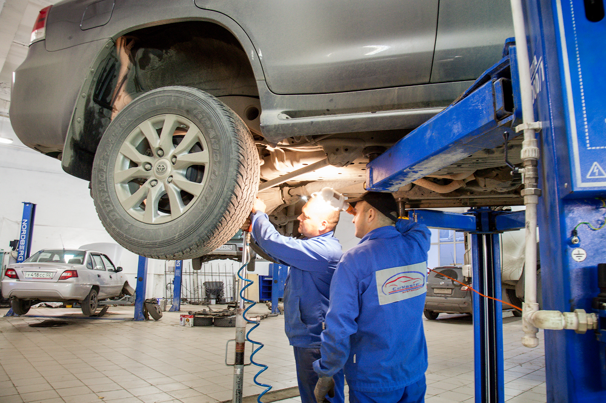
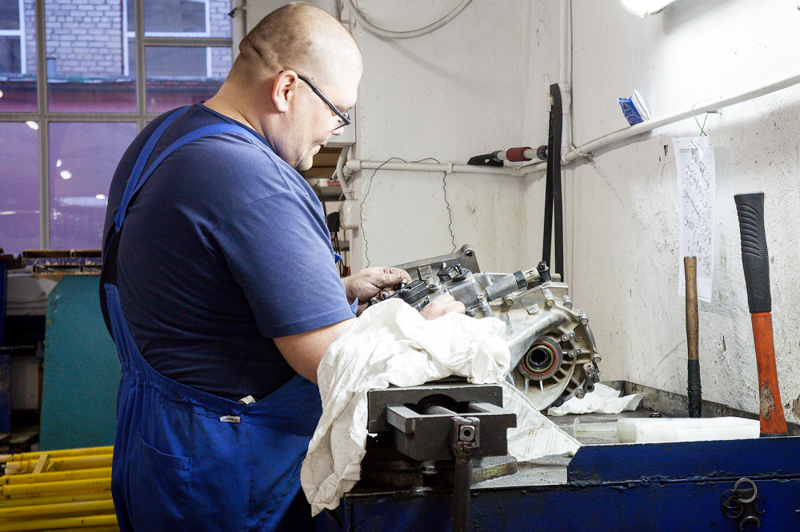
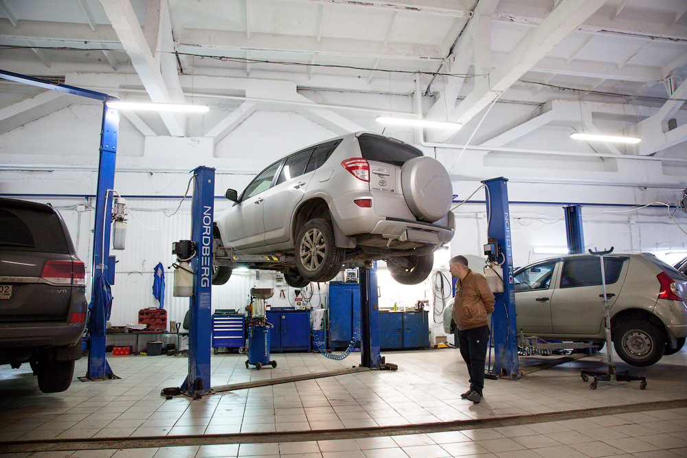
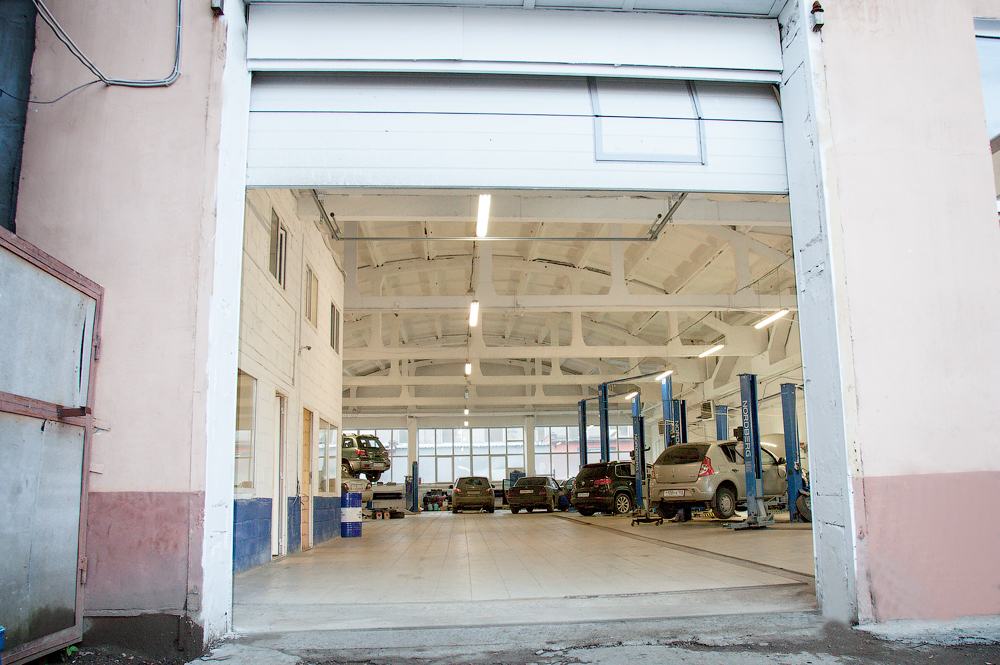

Мы знаем, как тревожно бывает, когда в машине появляется посторонний шум или вибрация, особенно в дальней поездке. Постоянный стук в подвеске или непонятный гул могут стать серьезной проблемой. Из-за этой неуверенности в техническом состоянии автомобиля вы теряете спокойствие за рулем.
Вы не одиноки в этом — и, к счастью, существуют проверенные решения, которые помогут не только устранить текущую поломку, но и предотвратить дорогостоящий ремонт в будущем. Эксперты сходятся во мнении, что качество запчастей и регулярность обслуживания играют решающую роль в «здоровье» вашего автомобиля.




Многие автовладельцы продолжают ездить на изношенных деталях, даже не подозревая, какой вред это наносит соседним узлам машины. Учитывая, что вы эксплуатируете автомобиль ЕЖЕДНЕВНО, это только усугубляет ситуацию.
Чтобы решить проблему, достаточно вовремя провести профессиональную диагностику. Просто заменив изношенную деталь на качественный аналог в СТО «Автограф», вы сможете полностью исключить риск внезапной поломки и вернуть себе удовольствие от вождения.
Вам может казаться, что поддерживать автомобиль в идеальном состоянии — это слишком сложно или дорого. Однако качественный уход, как и любая важная привычка, требует лишь системного подхода. С каждым правильным техническим обслуживанием ваш автомобиль будет работать всё четче, особенно если вы доверяете его мастерам, знающим специфику вашей марки.
Акция: первое посещение со скидкой 50% на все работы! Проверьте авто выгодно уже на этой неделе.
Оставьте комментарий